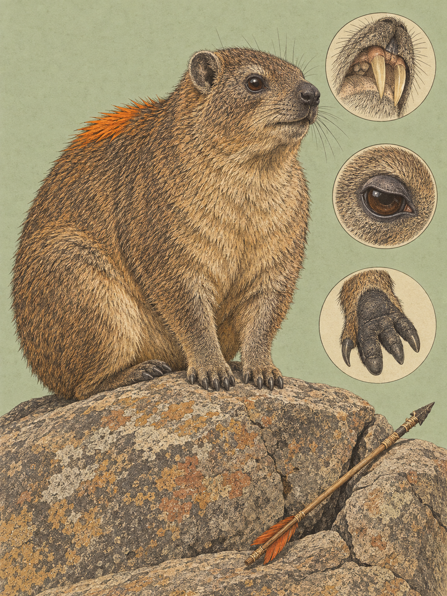

RIFT VALLEY
Procavia capensis
Swahili: „Pimbi“; Maa: „en-kijijur“, „en-kinyinkurri“

Am Morgen liegt ein Klippschliefer flach auf dem warmen Felsen und lässt die Sonne für sich arbeiten. Sein Körper ist gedrungen und kräftig, der Hals kurz, ein sichtbarer Schwanz fehlt. Die Vorderfüße tragen vier Zehen, die Hinterfüße drei. Ihre schwarzen, haarlosen Sohlen sind von Drüsen durchsetzt, deren Sekret die Haftung auf glatten Felsen erhöht. An der inneren Hinterzehe sitzt eine gebogene Putzklaue. Damit pflegt das Tier sein Fell. Die Augen blicken weit auseinander nach vorn. Bei greller Sonne legt sich eine dunkle Membran, das Umbraculum, über die Pupille. So kann der Klippschliefer ins Licht sehen, ohne dass die Netzhaut geschädigt wird.
Das Fell wirkt gräulich, weil die einzelnen Deckhaare an der Basis dunkel, in der Mitte heller und an der Spitze schwarz sind. In trockenen Lebensräumen reicht die Färbung von hellem Gelbbraun bis Grau, in feuchteren Regionen bis zu dunklem Braun oder Schwarz. Der Bauch ist heller und oft cremefarben. In der Mitte des Rückens liegt eine nackte Drüsenfläche, die von langen schwarzen, gelben oder orangefarbenen Haaren umgeben wird. Bei Erregung stellt sich dieser Fleck fächerartig auf. Erwachsene Tiere wiegen zwischen 1,3 und 5,4 Kilogramm. Die Art sieht gedrungen aus, trägt aber in ihren Zähnen eine weitere Überraschung: Die oberen, stoßzahnähnlichen Schneidezähne wachsen lebenslang.
Der wissenschaftliche Name bewahrt einen alten Irrtum. 1766 beschrieb Peter Simon Pallas das Tier in Den Haag als Cavia capensis, weil er es für ein afrikanisches Meerschweinchen hielt. 1780 stellte Gottlieb Conrad Christian Storr die eigene Gattung Procavia auf. Sie setzt sich aus dem lateinischen „vor“ und „Meerschweinchen“ zusammen und zeigt, wie lange die frühere Vorstellung nachwirkte. Capensis verweist auf die Typuslokalität am Kap der Guten Hoffnung. Heute gehören Schliefer zu den engsten lebenden Verwandten der Elefanten und Seekühe. Ihre Zähne und Schädel verraten diese Verwandtschaft, nicht ihr gedrungener Körper.
Die eigentliche Geschichte beginnt mit der Wärme. Klippschliefer sind Säugetiere, doch ihr Stoffwechsel arbeitet ungewöhnlich sparsam. Deshalb halten sie ihre Körpertemperatur nicht vollkommen gleich. Im Freiland schwankt sie um bis zu 5 Grad. Nachts und bei schlechtem Wetter ziehen sich die Tiere in tiefe Felsspalten zurück. Der Fels bildet dort eine thermisch stabile Pufferzone.
Am Morgen verlassen sie die Spalte und legen sich auf ein Felsplateau. Bei geringer Strahlung sitzen sie gekrümmt, die Vorderpfoten senkrecht aufgestellt. Diese Haltung heißt „Basking hunched“. Bei stärkerer Strahlung liegen sie flach auf Bauch oder Seite und strecken die Gliedmaßen aus. In dieser Haltung, „Basking flat“, nimmt der Körper eine größere Fläche der Sonnenwärme auf. Die Wärme kommt also von außen. Dadurch muss der Klippschliefer weniger Nahrungsenergie in eigene Körperwärme umwandeln. Diese Energieeinsparung hilft ihm in trockenen Landschaften mit spärlichem Pflanzenangebot.
Die Erklärung dieses Sonnenbadens änderte sich mit der Forschung. 1969 und 1982 vermuteten Forscher nach Laborversuchen mit Wärmelampen, die Tiere fielen nachts in eine Kältestarre und müssten sich am Morgen wieder aufwärmen. 2007 widerlegten K. J. Brown und C. T. Downs diese Torpor-Hypothese mit Messungen an freilebenden Tieren. Die Körpertemperatur blieb nachts in den Felsspalten weitgehend stabil. Das Basking dient deshalb vor allem dazu, die Temperatur am Tag zu halten und Stoffwechselenergie einzusparen. Auch das enge Zusammenliegen mehrerer Tiere erhöhte die Körperkerntemperatur nicht messbar.
Felsen sind für die Art nicht bloß ein Sonnenplatz, sondern eine Voraussetzung des Lebensraums. Inselberge, Steilhänge und Geröllfelder bieten Schutzspalten, die in den Trockengebieten des Rift Valley entscheidend sind. Bis zu 95 Prozent des Tages verbringt ein Klippschliefer ruhend, in der Sonne oder in der Höhle. Zur Nahrungssuche geht er nach dem morgendlichen Sonnenbad und wieder am späten Nachmittag los. Er frisst pflanzliche Nahrung, darunter Gräser, Kräuter und Rinde. Im Serengeti-Ökosystem wurden 79 Pflanzenarten in seiner Nahrung nachgewiesen. Das zeigt, wie breit er die Pflanzenwelt nutzt. Bei starker Mittagshitze und bei Regen ziehen sich die Kolonien zurück. Dichtes Übereinanderliegen geht mit steigender Wärme in einfaches Beieinandersitzen über.
In den Kolonien führt ein territoriales Männchen mehrere erwachsene Weibchen und ihren Nachwuchs. In reichen Lebensräumen können bis zu 80 Tiere zusammenkommen. Die Weibchen bleiben in ihrer Geburtskolonie, junge Männchen werden im Alter von 17 bis 30 Monaten zur Abwanderung gedrängt. Einige legen dabei mehr als zwei Kilometer zurück, um neue Felsspalten zu finden. Zwischen Ende September und Anfang Oktober, in der kenianischen Brunftzeit, markieren die Männchen die Felsen und rufen häufiger. Ihr Triller klingt nicht bei jedem Tier gleich. 2011 zeigten Lee Koren und Eli Geffen, dass die Gesänge eine über Jahre stabile, individuelle Signatur tragen. Der Ruf sagt also vor allem, wer singt. Die Felsen sind zugleich Teil eines größeren Nahrungsnetzes. Klippenadler, Leoparden und andere Räuber jagen Klippschliefer. Die Tragzeit beträgt etwa 215 Tage, durchschnittlich drei Jungtiere werden geboren. Die Geburten fallen ungefähr sieben Monate später, im April oder Mai, in die nährstoffreiche Regenzeit.
Am Hyrax Hill bei Nakuru bleibt der Felsen am Morgen warm, und der Klippschliefer bleibt darauf liegen. Erst wenn die Wärme in den Körper gezogen ist, hebt er den Kopf, setzt die Putzklaue an und schaut durch das Umbraculum in den hellen Himmel.
Nahe Nakuru liegt der Hyrax Hill, der nach den dort lebenden Tieren benannt ist und zugleich eine wichtige archäologische Stätte Ostafrikas darstellt. In der Mitte des 20. Jahrhunderts gruben Louis Leakey und Glynn Isaac dort aus. Leakey ordnete neolithische Funde der „Gumban“-Kultur zu. Der Name verweist auf eine überlieferte Kikuyu-Legende über die Gumba, ein kleinwüchsiges Waldvolk, das vor den Kikuyu in der Region gelebt haben soll. Auch die Mukogodo, eine frühere kuschitische Bevölkerungsgruppe, waren eng mit den Felsspalten verbunden und nutzten Klippschliefer als Proteinquelle. Ihr Autonym bedeutet „Menschen, die in Felsen leben“. Historisch wurden Felle getauscht und zu Kleidung oder Decken verarbeitet. Heute dringen Kolonien auch in Siedlungen vor, plündern Felder und können als Reservoirwirte der durch Sandmücken übertragenen kutanen Leishmaniose eine medizinische Bedeutung haben. Die Art gilt als nicht gefährdet.
Wo und wann: Am Hyrax Hill bei Nakuru zwischen 07:00 und 10:00 Uhr auf das Sonnenbaden warten. Besonders lohnend sind die gekrümmte Haltung mit aufgestellten Vorderpfoten, das flache Liegen und die Fellpflege. Später als 16:30 Uhr verlassen die Tiere die Felsen zur Nahrungssuche.
Brennweite: 100 bis 400 mm für Porträts und Details. Mit 26 bis 60 mm lässt sich ein ungestörter Klippschliefer zusammen mit dem Felsen und dem Rift Valley zeigen.
Bild-Idee: Das dunkle Umbraculum im Auge, die gebogene Putzklaue oder die stoßzahnähnlichen Schneidezähne im Seitenlicht aufnehmen. Ein zweites Bild kann die leuchtende Haarfläche auf dem Rücken während eines territorialen Rufs festhalten.